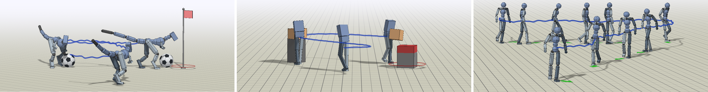

Neural Information Processing Systems (NeurIPS 2019)
Xue Bin PengMichael ChangGrace ZhangPieter AbbeelSergey Levine
University of California, Berkeley

Abstract
Humans are able to perform a myriad of sophisticated tasks by drawing upon skills
acquired through prior experience. For autonomous agents to have this capability,
they must be able to extract reusable skills from past experience that can be
recombined in new ways for subsequent tasks. Furthermore, when controlling complex
high-dimensional morphologies, such as humanoid bodies, tasks often require
coordination of multiple skills simultaneously. Learning discrete primitives for
every combination of skills quickly becomes prohibitive. Composable primitives
that can be recombined to create a large variety of behaviors can be more suitable
for modeling this combinatorial explosion. In this work, we propose multiplicative
compositional policies (MCP), a method for learning reusable motor skills that
can be composed to produce a range of complex behaviors. Our method factorizes
an agent's skills into a collection of primitives, where multiple primitives can be
activated simultaneously via multiplicative composition. This flexibility allows the
primitives to be transferred and recombined to elicit new behaviors as necessary
for novel tasks. We demonstrate that MCP is able to extract composable skills
for highly complex simulated characters from pre-training tasks, such as motion
imitation, and then reuse these skills to solve challenging continuous control tasks,
such as dribbling a soccer ball to a goal, and picking up an object and transporting
it to a target location.
@incollection{
MCPPeng19,
title = {MCP: Learning Composable Hierarchical Control with Multiplicative Compositional Policies},
author = {Peng, Xue Bin and Chang, Michael and Zhang, Grace and Abbeel, Pieter and Levine, Sergey},
booktitle = {Advances in Neural Information Processing Systems 32},
editor = {H. Wallach and H. Larochelle and A. Beygelzimer and F. d\textquotesingle Alch\'{e}-Buc and E. Fox and R. Garnett},
pages = {3681--3692},
year = {2019},
publisher = {Curran Associates, Inc.},
url = {http://papers.nips.cc/paper/8626-mcp-learning-composable-hierarchical-control-with-multiplicative-compositional-policies.pdf}
}